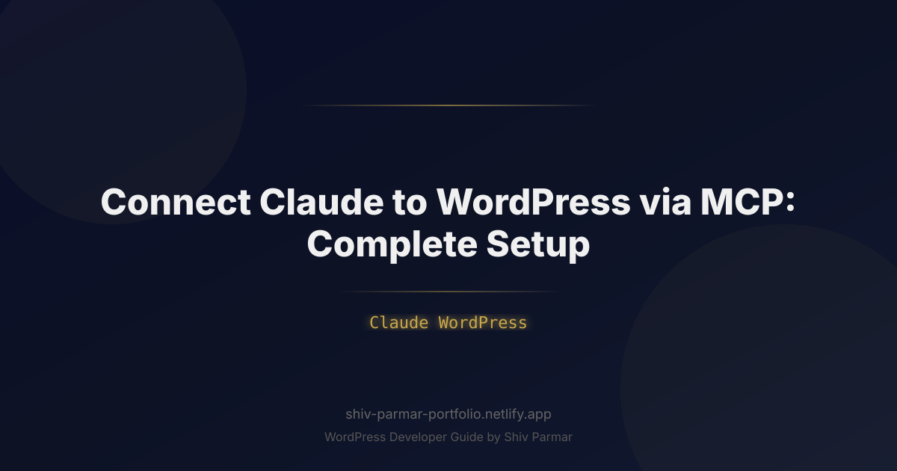

Connect Claude to WordPress via MCP: Complete Setup
Table of Contents
- What is Model Context Protocol (MCP) and WordPress Integration?
- Why Connecting Claude to WordPress via MCP Matters in 2026
- Step-by-Step Guide: Connect Claude to WordPress via MCP
- Advanced Capabilities: Expanding Your WordPress MCP Toolset
- Best Practices for Managing WordPress with Claude MCP
- Common Mistakes to Avoid
- Conclusion
- Frequently Asked Questions
Imagine commanding your AI assistant to update thirty stale blog posts, optimize their schema markup, organize them into newly structured categories, and queue them as drafts—all from a single prompt inside your desktop chat interface. Until recently, bridging the gap between large language models and content management systems required clunky custom webhooks, rigid Zapier automations, or endless rounds of copying and pasting Markdown into the WordPress Gutenberg editor.
The introduction of Anthropic's Model Context Protocol (MCP) fundamentally changes this dynamic. MCP provides an open, standardized bridge between local or hosted AI interfaces like Claude Desktop and external data environments. By implementing a dedicated WordPress MCP server, you transform Claude from a passive text generator into an active, contextual content operator capable of interacting directly with your database, media library, and taxonomy structure.
Whether you manage a high-traffic affiliate portal, an enterprise digital publication, or a personal tech blog, mastering the Claude WordPress integration via MCP setup elevates your editorial workflow into a seamless, bidirectional pipeline. In this comprehensive technical guide, you will learn how MCP operates, how to configure WordPress authentication, and how to build and connect an MCP server to Claude Desktop to run real-time content operations safely and efficiently.
What is Model Context Protocol (MCP) and WordPress Integration?
The Model Context Protocol (MCP) is an open-standard communication specification introduced by Anthropic. It standardizes how AI applications securely access resources, execute tools, and retrieve context from local and remote services. Traditionally, integrating an LLM with an external API required proprietary wrappers, bespoke function-calling schemas, or fragile middleware. MCP replaces this fragmentation with a standardized client-host-server architecture operating via JSON-RPC 2.0 messages.
In an MCP ecosystem, there are three primary components:
- The MCP Host: The front-facing application coordinating the conversation and user interaction (in this case, Claude Desktop or an enterprise Claude client).
- The MCP Client: A module embedded within the host that connects one-to-one with specialized external servers, discovering their tools and relaying requests.
- The MCP Server: A lightweight service exposing specific tools (functions), resources (data streams), and prompts (templates) via standardized JSON-RPC protocols.
When you connect Claude to WordPress using MCP, you place an MCP server between Claude Desktop and your WordPress site's REST API. The MCP server translates Claude's natural language intentions into authorized, structured HTTP requests targeting WordPress endpoints like /wp/v2/posts, /wp/v2/categories, and /wp/v2/media.
Unlike standard webhooks, this connection is bidirectional and state-aware. Claude does not merely transmit text to WordPress; it queries your existing articles to prevent duplicate coverage, inspects existing tags before creating new ones, audits current SEO metadata, and updates live drafts—all while maintaining full awareness of your site's operational context.
Why Connecting Claude to WordPress via MCP Matters in 2026
Digital publishing has shifted from raw content volume to speed of iteration, precision updates, and structured entity management. Search engines reward authoritative content that remains accurate, comprehensive, and well-linked. Manual administrative tasks—formatting, uploading assets, populating excerpts, setting internal tags, and adjusting metadata—often consume more time than the actual research and writing phases.
Connecting an intelligent AI assistant directly to your site architecture eliminates these administrative bottlenecks. Instead of treating your LLM as an external scratchpad, Claude functions as an embedded editorial partner that reads from and writes to your production environment under your explicit supervision.
| Workflow Dimension | Traditional AI Copy-Paste Workflow | Claude via MCP Setup |
|---|---|---|
| Context Retrieval | Manual copy-pasting of old posts or site guidelines into the chat window. | Live retrieval of existing posts, slugs, and categories directly via tools. |
| Content Insertion | Manual block conversion, formatting cleanups, and title/excerpt transfers. | Direct insertion into WordPress drafts with valid Gutenberg-compatible HTML. |
| Taxonomy Consistency | Prone to duplicate tag creation and inconsistent category structures. | Claude queries existing taxonomies first, mapping IDs accurately before publishing. |
| Bulk Optimization | Painstakingly slow; requires opening dozens of browser tabs. | Automated batch audits and updates driven by multi-step iterative prompts. |
| Human Oversight | High manual labor required for basic data entry. | Effort redirected to final review, strategy, and editorial governance. |
By leveraging an open protocol rather than a walled-garden SaaS connector, you maintain full sovereignty over your data. There are no per-task middleware fees, your private credentials remain on your local machine, and your custom post types or bespoke metadata fields can be exposed on your own terms.
Step-by-Step Guide: Connect Claude to WordPress via MCP
Setting up your Claude WordPress MCP architecture involves three distinct layers: preparing your WordPress site for authenticated programmatic access, setting up a local or containerized MCP server, and configuring Claude Desktop to execute operations through that server. Follow this step-by-step walkthrough to get up and running.
1. Prerequisites and Environment Preparation
Before writing code or altering configurations, verify that your environment satisfies these baseline requirements:
- Claude Desktop: Installed on macOS or Windows (MCP local client support is currently standard on the desktop app).
- Node.js: Version 18.x or higher installed locally (check via
node -vin your terminal). - WordPress Environment: WordPress 5.6 or later (which includes native support for Application Passwords), running over HTTPS with standard REST API endpoints enabled.
- User Permissions: An administrative or editor-level user account on the target WordPress instance.
2. Generate WordPress Application Passwords
Never expose your master administrative password inside integration scripts or configuration files. WordPress includes an isolated authentication system known as Application Passwords. These credentials allow programmatic API access without exposing your primary login credentials and can be revoked instantly at any time.
To generate an Application Password:
- Log into your WordPress Dashboard.
- Navigate to Users > Profile (or Users > All Users, then edit your target profile).
- Scroll down to the Application Passwords section.
- In the New Application Password Name field, input a distinct label such as
Claude Desktop MCP. - Click Add New Application Password.
- WordPress will display a randomly generated password in the format
xxxx xxxx xxxx xxxx. Copy this string immediately and store it securely; it will not be displayed again.
Ensure that basic authentication is not blocked by your hosting firewall or security plugins like Wordfence or Cloudflare. You can verify your credentials by running a simple cURL request in your terminal:
curl -X GET https://your-domain.com/wp-json/wp/v2/users/me \
-u "your_username:xxxx xxxx xxxx xxxx"If the response returns your user profile in JSON format, your site is ready for programmatic interaction.
3. Build or Install the WordPress MCP Server
An MCP server for WordPress can be constructed using the official Model Context Protocol SDK (available for TypeScript/Node.js or Python). Below, we will construct a lightweight, high-performance Node.js MCP server using @modelcontextprotocol/sdk that provides tools for creating, reading, and updating posts.
Create a dedicated directory for your project and initialize it:
mkdir wordpress-mcp-server
cd wordpress-mcp-server
npm init -y
npm install @modelcontextprotocol/sdk axios dotenvOpen package.json and ensure "type": "module" is set. Next, create a file named index.js and insert the following server implementation:
import { Server } from "@modelcontextprotocol/sdk/server/index.js";
import { StdioServerTransport } from "@modelcontextprotocol/sdk/server/stdio.js";
import {
CallToolRequestSchema,
ListToolsRequestSchema,
} from "@modelcontextprotocol/sdk/types.js";
import axios from "axios";
const WP_URL = process.env.WP_SITE_URL?.replace(/\/$/, "");
const WP_USER = process.env.WP_USERNAME;
const WP_APP_PASS = process.env.WP_APP_PASSWORD;
if (!WP_URL || !WP_USER || !WP_APP_PASS) {
console.error("Missing required environment variables.");
process.exit(1);
}
const authHeader = `Basic ${Buffer.from(`${WP_USER}:${WP_APP_PASS}`).toString("base64")}`;
const wpClient = axios.create({
baseURL: `${WP_URL}/wp-json/wp/v2`,
headers: {
Authorization: authHeader,
"Content-Type": "application/json",
},
});
const server = new Server(
{
name: "wordpress-mcp-server",
version: "1.0.0",
},
{
capabilities: {
tools: {},
},
}
);
// Register available tools
server.setRequestHandler(ListToolsRequestSchema, async () => {
return {
tools: [
{
name: "get_posts",
description: "Retrieve recent posts from the WordPress site",
inputSchema: {
type: "object",
properties: {
per_page: { type: "number", description: "Number of posts to fetch (default: 5)" },
status: { type: "string", description: "Status of posts: publish, draft, pending, etc." },
},
},
},
{
name: "create_post",
description: "Create a new post or draft in WordPress",
inputSchema: {
type: "object",
properties: {
title: { type: "string", description: "Title of the post" },
content: { type: "string", description: "HTML or Gutenberg block content" },
status: { type: "string", enum: ["draft", "publish", "pending"], default: "draft" },
excerpt: { type: "string", description: "Optional excerpt" },
},
required: ["title", "content"],
},
},
{
name: "update_post",
description: "Update an existing WordPress post by ID",
inputSchema: {
type: "object",
properties: {
id: { type: "number", description: "The ID of the post to update" },
title: { type: "string", description: "New title" },
content: { type: "string", description: "New HTML content" },
status: { type: "string", description: "New status" },
},
required: ["id"],
},
},
],
};
});
// Handle tool executions
server.setRequestHandler(CallToolRequestSchema, async (request) => {
const { name, arguments: args } = request.params;
try {
if (name === "get_posts") {
const response = await wpClient.get("/posts", {
params: { per_page: args?.per_page || 5, status: args?.status || "any" },
});
const posts = response.data.map((p) => ({
id: p.id,
title: p.title.rendered,
slug: p.slug,
status: p.status,
link: p.link,
}));
return {
content: [{ type: "text", text: JSON.stringify(posts, null, 2) }],
};
}
if (name === "create_post") {
const response = await wpClient.post("/posts", {
title: args.title,
content: args.content,
status: args.status || "draft",
excerpt: args.excerpt || "",
});
return {
content: [
{
type: "text",
text: `Post created successfully! ID: ${response.data.id}, Link: ${response.data.link}`,
},
],
};
}
if (name === "update_post") {
const { id, ...data } = args;
const response = await wpClient.post(`/posts/${id}`, data);
return {
content: [
{
type: "text",
text: `Post ${response.data.id} updated successfully. Status: ${response.data.status}`,
},
],
};
}
throw new Error(`Tool not found: ${name}`);
} catch (error) {
const errorDetails = error.response?.data?.message || error.message;
return {
content: [{ type: "text", text: `Error executing ${name}: ${errorDetails}` }],
isError: true,
};
}
});
const transport = new StdioServerTransport();
await server.connect(transport);
4. Configure Claude Desktop
To let Claude Desktop know that this MCP server exists and how to run it, add it to your claude_desktop_config.json configuration file. The location of this file depends on your operating system:
- macOS:
~/Library/Application Support/Claude/claude_desktop_config.json - Windows:
%APPDATA%\Claude\claude_desktop_config.json
Open this configuration file in your preferred code editor and define your new WordPress MCP service under the mcpServers object:
{
"mcpServers": {
"wordpress": {
"command": "node",
"args": [
"/ABSOLUTE/PATH/TO/wordpress-mcp-server/index.js"
],
"env": {
"WP_SITE_URL": "https://your-domain.com",
"WP_USERNAME": "your_wp_username",
"WP_APP_PASSWORD": "xxxx xxxx xxxx xxxx"
}
}
}
}Note: Make sure to replace /ABSOLUTE/PATH/TO/wordpress-mcp-server/index.js with the real absolute path to your file. On Windows, use properly escaped backslashes (e.g., C:\\Users\\Username\\...) or forward slashes.
5. Verify and Test the MCP Connection
Once you save your configuration file, restart Claude Desktop entirely (quit the application fully via the system tray or menu bar, then relaunch it).
Look at the bottom right corner of the Claude Desktop prompt interface. You should see a small hammer icon (or tool indicator). Clicking this icon reveals the tools exposed by your local server: get_posts, create_post, and update_post.
To verify that communication is working, enter a simple test prompt:
"Claude, please use the WordPress tool to fetch the last 3 posts from my site and show me their titles, IDs, and statuses."
Claude will formulate an MCP tool request, invoke get_posts through your local Node.js process, receive the JSON payload from your WordPress REST API, and render a clear summary in the chat interface. You can now publish drafts, inspect content, or update fields using simple natural language commands.
Advanced Capabilities: Expanding Your WordPress MCP Toolset
A basic read-write implementation for blog posts is just the beginning. The WordPress REST API exposes nearly every corner of your CMS. By adding more tool definitions to your MCP server, you can expand Claude into a comprehensive publishing engine.
| MCP Tool Name | REST API Endpoint | Practical Use Case |
|---|---|---|
| manage_taxonomies | /wp/v2/categories, /wp/v2/tags | Check for existing topic tags before publishing to avoid creating duplicates. |
| upload_media | /wp/v2/media | Upload AI-generated charts or assets and automatically bind them to post IDs. |
| update_seo_meta | /wp/v2/posts/{id} (meta field) | Update Yoast or RankMath titles, descriptions, and canonical URLs directly. |
| audit_revisions | /wp/v2/posts/{id}/revisions | Compare content differences across revisions to assess editorial modifications. |
Gutenberg Block Formatting and Structural Integrity
One major hurdle when using AI with WordPress is ensuring the generated output doesn't disrupt layout builders or block parsers. The block editor stores layout elements as HTML comments containing JSON attributes (e.g., <!-- wp:paragraph -->, <!-- wp:heading {"level":2} -->).
You can train Claude to output valid block grammar natively by specifying formatting standards within your system prompt or custom MCP server prompt definitions:
When generating content for the create_post or update_post tools,
always structure the post body using valid WordPress Gutenberg block markup.
Example format:
<!-- wp:paragraph -->
<p>Your introductory paragraph text goes here.</p>
<!-- /wp:paragraph -->
<!-- wp:heading {"level":2} -->
<h2 class="wp-block-heading">Section Title</h2>
<!-- /wp:heading -->
Do not wrap the output in Markdown code fences when sending arguments to the tool.Instructing Claude to structure its output this way ensures that drafts can be opened immediately inside the WordPress block editor without triggering "Attempt Block Recovery" validation errors.
Best Practices for Managing WordPress with Claude MCP
Integrating an autonomous model with a live content management system requires solid safeguards to ensure site stability, security, and editorial quality.
Enforce a Draft-First Policy
Never allow your MCP server to publish posts directly to live status (status: "publish") by default. Set the default state for any post creation or revision tool to "draft" or "pending". This guarantees that a human editor must review layout accuracy, verify affiliate links, and check factual claims before changes go live.
Implement Least-Privilege API Accounts
Do not attach your MCP server to your primary Administrator account. Instead, create a dedicated WordPress user with the Editor or Author role specifically for your AI assistant. This limits the blast radius of any unexpected operations, preventing the model from altering themes, modifying plugins, or managing other users.
Sanitize and Validate HTML Payloads
Even though Claude produces clean HTML most of the time, your MCP server should validate input payloads using libraries like sanitize-html or native WordPress sanitization routines. This prevents unclosed tags, malformed iframes, or invalid script tags from landing in your database.
Handle API Rate Limiting and Caching
When running complex multi-step routines (such as auditing the last 50 published articles), your server may send rapid-fire requests that trigger hosting-level rate limits. Configure your MCP server client with exponential backoff retry mechanisms, and avoid hitting endpoints that bypass caching unless you're modifying data.
Common Mistakes to Avoid
When connecting an AI assistant to WordPress via MCP, developers and publishers frequently encounter a few common pitfalls. Here is how to diagnose and resolve them:
1. Cloudflare or Hosting Security Blocking Application Passwords
Many managed WordPress hosts and web application firewalls (WAFs) block standard HTTP Basic Authentication headers by default to prevent brute-force attacks. If your MCP tools return 401 Unauthorized or 403 Forbidden errors despite using valid credentials, check your security rules:
- In Cloudflare: Create a WAF Skip rule for requests targeting
/wp-json/*containing your designated user-agent or coming from your development IP. - In Security Plugins: Ensure that settings such as "Disable XML-RPC / REST API Basic Auth" are toggled to allow authenticated REST requests.
2. Path Resolution Failures in Claude Desktop Config
A common error during MCP setup is referencing relative file paths or relying on user environment variables inside claude_desktop_config.json. The Claude Desktop application runs in an isolated process that might not inherit your shell's $PATH or .bashrc exports.
Always provide absolute paths to both the runtime executable and the server entry point:
// Correct configuration pattern
"command": "/usr/local/bin/node",
"args": ["/Users/username/projects/wordpress-mcp/index.js"]3. Passing Giant Contexts Unnecessarily
A common mistake when running bulk operations is requesting complete post objects. The WordPress REST API returns extensive schema metadata, raw rendered output, revision histories, and link arrays for every single post. Requesting 50 full posts can quickly overflow Claude's context window or inflate token usage.
Keep your tool outputs lean. Design your MCP server tools to strip out unnecessary fields, returning only the id, title, slug, date, and essential excerpt fields back to Claude unless the prompt explicitly asks for full content analysis.
4. Forgetting Custom Post Types (CPTs) Exposure
If your WordPress site relies on custom post types (such as "Products", "Documentation", or "Case Studies"), you might find that Claude cannot see them through standard endpoints. Custom post types are hidden from the REST API by default unless explicitly enabled in their registration settings.
Ensure that your custom post types have show_in_rest set to true in your theme's functions.php or plugin code:
register_post_type('documentation', array(
'labels' => array('name' => __('Documentation')),
'public' => true,
'has_archive' => true,
'show_in_rest' => true, // Essential for REST API & MCP visibility
'rest_base' => 'documentation',
));Once exposed, simply add matching tool endpoints to your MCP server to let Claude manage your custom post types with the same ease as standard blog posts.
Conclusion
Integrating your site with a modern language model transforms everyday content creation and site administration. By completing this MCP setup, you turn Claude into an active, context-aware AI assistant capable of drafting content, updating metadata, and streamlining editorial workflows directly from your desktop. This seamless Claude WordPress connection bridges the gap between advanced artificial intelligence and practical, day-to-day website management, saving you hours of manual effort.
As the Model Context Protocol continues to mature, the potential for extending site capabilities will only grow. Embracing this workflow now positions your publishing pipeline ahead of the curve, enabling faster iterations, smarter automation, and a drastically reduced administrative burden across your entire digital presence.
If you need expert assistance tailoring this integration, setting up secure custom tools, or building bespoke website solutions, Shiv Parmar is available for WordPress development work worldwide. Whether you want to implement cutting-edge AI features, optimize your site's performance, or develop custom plugins and themes, reach out today to bring your project to life.
Frequently Asked Questions
What do I need to connect Claude to my WordPress site?
Install an MCP server plugin on the site, create credentials for it, and register the server in Claude Desktop configuration using either a local Stdio command or a remote SSE URL. The site REST API must be reachable and the plugin must expose the tools you want Claude to use. The step-by-step section walks through each of these stages in order.
Does the Claude WordPress connection require authentication?
Yes, and skipping it is one of the common mistakes the post highlights: unauthenticated public REST endpoints turn your admin into an open API. Use the plugin token or application-password flow, keep nonce and session isolation intact, and prefer SSE over the internet only with TLS and strict access rules. If you cannot secure the endpoint, keep the connection on Stdio locally.
What can Claude actually do once connected?
With the registered tools it can update and draft posts, apply schema markup, reorganize categories, and run routine maintenance from a single prompt. The introduction uses the example of refreshing thirty stale posts and queuing them as drafts without opening the dashboard. Anything you do not expose as a tool stays out of reach, so the tool list is your permission boundary.
How do I keep this integration from damaging my live site?
Start on a staging copy, keep backups current, and apply the guide best practices: least-privilege tools, strictly typed tool schemas, and aggressive token minimization to keep responses small and predictable. Avoid giving the model direct SQL tools in production, and review every automated change before it ships. These guardrails let you automate without giving up control.